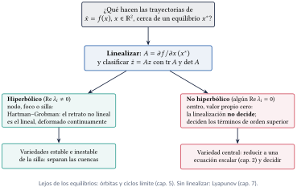
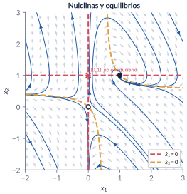
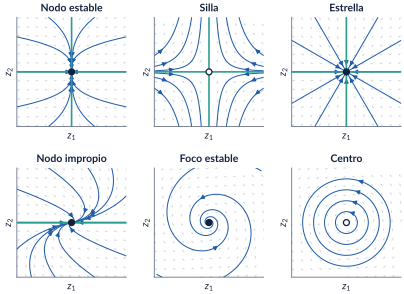
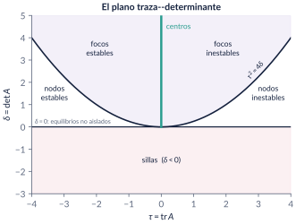
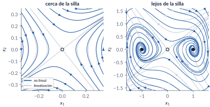
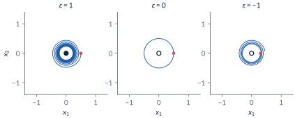
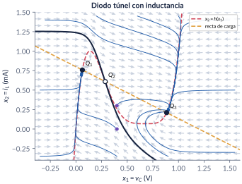
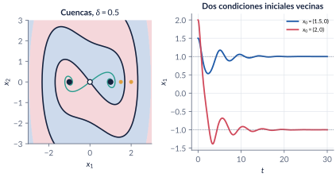
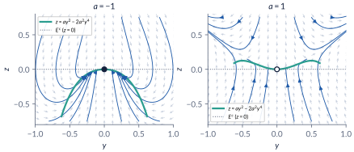

4. Sistemas bidimensionales
Semanas 2 y 5
¿Qué hacen las trayectorias de un sistema plano cerca de un equilibrio? Esta parte arma el retrato de fase sin resolver la ecuación (campo vectorial, nulclinas), resuelve por completo los sistemas lineales \(\dot x=Ax\) y los clasifica con la traza y el determinante, y responde la pregunta que casi nunca se hace en control lineal: ¿cuándo dice la verdad la linealización? La respuesta es el teorema de Hartman–Grobman, con sus excepciones (los equilibrios no hiperbólicos), que se atacan con la variedad central. Las variedades estable e inestable de las sillas dibujan las fronteras entre cuencas de atracción.
Al terminar esta parte usted podrá
- Dibujar e interpretar el plano de fase de un sistema de segundo orden: campo vectorial, trayectorias, nulclinas y equilibrios, sin resolver la ecuación.
- Resolver \(\dot x=Ax\) con la exponencial de matriz y con un cambio de coordenadas, y probar que la solución es única.
- Clasificar el origen de \(\dot x=Ax\) en \(\mathbb R^2\) (nodo, silla, foco, centro y los casos degenerados) con la traza y el determinante, y saber cuáles de esos retratos sobreviven a una perturbación.
- Linealizar en un equilibrio y usar el teorema de Hartman–Grobman con sus hipótesis: qué garantiza, qué no garantiza y cuándo no dice nada.
- Reconocer las variedades estable e inestable de una silla y usarlas como fronteras entre cuencas de atracción.
- Reducir un sistema a su variedad central para decidir la estabilidad cuando la linealización tiene valores propios en el eje imaginario.
Ruta de las clases
| Semana | Qué se ve | Capítulo | Scripts |
|---|---|---|---|
| 2 (12 de agosto) | Campo vectorial y plano de fase; nulclinas; la exponencial de matriz y la diagonalización; los retratos lineales y el teorema de traza y determinante; robustez | §4.1–4.4 | C4_Ej1–C4_Ej6 |
| 5 (31 de agosto) | Linealización y Hartman–Grobman; Duffing y el diodo túnel; variedades estable e inestable; variedad central | §4.5–4.8 | C4_Ej7–C4_Ej12, crearModelo_DiodoTunel2D |
Lo esencial, en una página

Nulclinas
La nulclina de \(x_1\) es \(\{f_1=0\}\) (el campo es vertical); la de \(x_2\), \(\{f_2=0\}\) (horizontal). Los equilibrios son los cruces de una nulclina de \(x_1\) con una de \(x_2\); entre ellas, el flujo va siempre hacia el mismo cuadrante.

Trampa: “la trayectoria llega al equilibrio”
Si \(f\) es localmente Lipschitz, ninguna solución alcanza un equilibrio en tiempo finito (contradiría la unicidad hacia atrás). Las trayectorias tienden al equilibrio. Sin Lipschitz sí: \(\dot x=-\sqrt{|x|}\) llega a \(0\) desde \(1\) en \(t=2\).
Teorema fundamental y diagonalización
\(x(t)=e^{At}x_0\) es la única solución de \(\dot x=Ax\), \(x(0)=x_0\). Si \(A\) tiene valores propios reales distintos y \(P=[v_1\ \cdots\ v_n]\), entonces \(P^{-1}AP=\mathrm{diag}(\lambda_i)\) y \(e^{At}=P\,\mathrm{diag}(e^{\lambda_it})\,P^{-1}\).
Trampa: “\(\dot x_1=-x_1-3x_2\): como \(a_{11}<0\), \(x_1\) decae”
Con \(\dot x_2=2x_2\), \(x_1(t)=x_1(0)e^{-t}+x_2(0)(e^{-t}-e^{2t})\): desde \((1,1)\) se anula en \(t=\tfrac13\ln2\) y se va a \(-\infty\). Cada estado mezcla todos los modos.
Traza y determinante (Perko, §1.5)
Con \(\tau=\mathrm{tr}\,A\), \(\delta=\det A\neq0\): silla si \(\delta<0\); nodo si \(\delta>0\) y \(\tau^2\ge4\delta\); foco si \(\tau^2<4\delta\) y \(\tau\neq0\); centro si \(\delta>0\) y \(\tau=0\). Estable si \(\tau<0\). El giro es antihorario si \(a_{21}>0\).


Trampa: “en un nodo, las trayectorias llegan por la dirección rápida”
Llegan tangentes a la dirección lenta: con \(\lambda=-6,-2\), la componente rápida desaparece primero y lo que queda cerca del origen es la lenta.
Hartman–Grobman (Grobman 1959, Hartman 1960)
Si \(x^*\) es un equilibrio hiperbólico (ningún valor propio de la jacobiana con parte real nula), hay un homeomorfismo local que lleva las trayectorias no lineales a las de \(\dot e=Ae\). Es local, \(h\) no es única ni diferenciable, y si \(x^*\) no es hiperbólico el teorema no dice nada.

Trampa: “la linealización es un centro: el sistema oscila”
\(\dot x_1=x_2\), \(\dot x_2=-x_1-\varepsilon x_1^2x_2\) tiene \(\lambda=\pm j\) para todo \(\varepsilon\), y \(\frac{d}{dt}(x_1^2+x_2^2)=-2\varepsilon x_1^2x_2^2\): espiral hacia adentro si \(\varepsilon>0\), hacia afuera si \(\varepsilon<0\).

Biestabilidad: Duffing y el diodo túnel
Duffing amortiguado (\(\delta=0.5\)) tiene una silla en el origen y dos focos estables en \((\pm1,0)\); el diodo túnel con inductancia, dos nodos estables separados por una silla. En los dos, la variedad estable de la silla es la frontera entre las cuencas: desde \(v_C=0.4\) V el diodo termina en \(Q_1\) si \(i_L(0)=0\) y en \(Q_3\) si \(i_L(0)\gtrsim0.189\) mA.

Trampa: “las condiciones iniciales sobre \(E^s\) llegan a la silla”
En \(\dot x_1=-x_1\), \(\dot x_2=x_2+x_1^2\), \(W^s=\{x_2=-x_1^2/3\}\) es solo tangente a \(E^s\) (el eje \(x_1\)); desde \((1,0)\), \(x_2(t)=\tfrac13(e^t-e^{-2t})\to\infty\).

Variedad central (Khalil, §8.1; Carr, 1981)
Si la jacobiana tiene \(k\) valores propios con parte real nula y los demás con parte real negativa, hay una variedad invariante \(z=h(y)\) tangente a \(E^c\), y la estabilidad del origen es la del sistema reducido \(\dot y=A_1y+g_1(y,h(y))\). \(h\) se aproxima con la ecuación de invariancia.
Trampa: “\(z\) es rápida: se reemplaza por \(z=0\)”
En \(\dot y=yz\), \(\dot z=-z+ay^2\), con \(z=0\) quedaría \(\dot y=0\) para todo \(a\). Pero \(z\to h(y)=ay^2-2a^2y^4+\cdots\) y el reducido es \(\dot y=ay^3+\cdots\): estable si \(a<0\), inestable si \(a>0\).

Explorador interactivo
Tres pestañas. Todo se calcula en su navegador (Runge–Kutta de paso fijo, Newton y jacobianas numéricas), con los mismos modelos de C4_Ej2, C4_Ej4, C4_Ej5, C4_Ej7–C4_Ej10 y C4_Ej12.
Retos con el explorador
- Retratos lineales: escoja el nodo \(\mathrm{diag}(-6,-2)\). ¿Por qué eje llegan las trayectorias? Cambie \(a_{22}\) a \(-8\). ¿Y ahora?
- Retratos lineales: parta del nodo impropio y mueva \(a_{21}\) a \(-0.05\) y a \(+0.05\). ¿Qué tipo aparece en cada caso? ¿Cambia la estabilidad?
- Retratos lineales: construya un centro que gire en sentido horario y otro antihorario. ¿Qué elemento de \(A\) decide?
- Linealizar: en el sistema de la clase, haga clic cerca del punto \((0,1)\). ¿Por qué no se queda quieta la trayectoria?
- Linealizar: en Duffing, suba \(\delta\) por encima de \(2.83\). ¿Qué cambia en los equilibrios \((\pm1,0)\)? ¿Y en el retrato?
- Linealizar: en el diodo túnel, lance trayectorias desde \(v_C=0.4\) con distintas \(i_L(0)\). Encuentre el umbral. Cambie \(L\): ¿cambian los equilibrios? ¿Y el umbral?
- Linealizar: en “un centro que no lo es”, ponga \(\varepsilon=0\) y luego \(\pm0.2\). ¿Qué dice la clasificación en los tres casos?
- Variedad central: con \(a=-1\), arranque en \(z(0)=0.6\). ¿Cuánto tarda en caer a la variedad? Ponga \(a=0\): ¿converge \(y\) a cero?
Códigos de esta parte
Los bloques salen directamente de los archivos del repositorio. Ejecute antes iniciarCurso. verificarCap04 comprueba los números del capítulo (38/38). Ningún script necesita toolboxes. Dos funciones nuevas en comun/: retratoFase (campo con flechas normalizadas, trayectorias y equilibrios) y clasificarEquilibrio (el teorema de traza y determinante, con el sentido de giro).
El campo vectorial y la masa–resorte (§4.2).
f = @(x) [2*x(1)*x(2); x(1)*x(2)];
fprintf('f(1,2) = (%g, %g)\n', f([1; 2]));
fig = estiloFigura(1100, 480);
ax = subplot(1, 2, 1);
retratoFase(ax, f, [-3 3], [-3 3], 'X0', [1 -1 2 -2 0.5; 2 -2 -1 1 -0.5], 'T', 2, 'Atras', true);
title('$\dot x_1=2x_1x_2,\ \dot x_2=x_1x_2$');
[~, X] = ode45(@(t, x) f(x), [0 0.3], [1; 2], odeset('RelTol', 1e-10));
fprintf('desde (1,2): x1 - 2 x2 va de %.6f a %.6f\n', 1 - 2*2, X(end, 1) - 2*X(end, 2));w = 2; g = @(x) [x(2); -w^2*x(1)];
ax = subplot(1, 2, 2);
retratoFase(ax, g, [-1.6 1.6], [-3.2 3.2], 'X0', [0.2 0.4 0.6 0.8 1.0 1.3; zeros(1, 6)], 'T', 2*pi/w);
title('Masa--resorte, $\omega=2$');
[~, X] = ode45(@(t, x) g(x), [0 10], [1; 0], odeset('RelTol', 1e-10, 'AbsTol', 1e-12));
E = w^2*X(:, 1).^2 + X(:, 2).^2;
fprintf('masa-resorte: variación de w^2 x1^2 + x2^2 = %.2e\n', max(E) - min(E));Nulclinas y equilibrios (§4.2).
f = @(x) [-x(1) + x(1)*x(2); x(1) + x(2) - 2*x(1)*x(2)];
fig = estiloFigura(700, 620); ax = gca;
retratoFase(ax, f, [-2 3], [-2 3], 'T', 15);
plot(ax, [0 0], [-2 3], '--', 'Color', [209 73 91]/255, 'LineWidth', 2); % f1 = 0
plot(ax, [-2 3], [1 1], '--', 'Color', [209 73 91]/255, 'LineWidth', 2);
x1 = linspace(-2, 3, 2001); x2 = x1./(2*x1 - 1); x2(abs(2*x1 - 1) < 0.02) = NaN;
plot(ax, x1, x2, '--', 'Color', [224 159 62]/255, 'LineWidth', 2); % f2 = 0
opc = optimset('TolFun', 1e-14, 'TolX', 1e-14, 'Display', 'off');
for x0 = [[0.1; -0.1], [0.9; 1.2]]
xe = fsolve(f, x0, opc);
A = jacobianoNumerico(f, xe);
[tipo, info] = clasificarEquilibrio(A, 1e-6);
fprintf('equilibrio (%.4f, %.4f): %s, lambda = %s %s\n', xe, tipo, num2str(info.lambda.', '%.4f '), info.giro);
plot(ax, xe(1), xe(2), 'ko', 'MarkerSize', 8, 'MarkerFaceColor', 'w');
end
fprintf('en (0,1): f = (%g, %g) -> no es equilibrio\n', f([0; 1]));
title('Nulclinas: de $x_1$ en coral, de $x_2$ en \''ambar');Diagonalización y exponencial de matriz (§4.3).
A = [-1 -3; 0 2];
[P, D] = eig(A); % columnas de P: vectores propios
disp('P^{-1} A P ='); disp(P\A*P);
t = 0.7;
E1 = P*diag(exp(diag(D)*t))/P; % P e^{Dt} P^{-1}
E2 = expm(A*t);
E3 = [exp(-t), exp(-t) - exp(2*t); 0, exp(2*t)]; % fórmula de las notas
fprintf('|P e^{Dt} P^-1 - expm(At)| = %.1e, |fórmula - expm| = %.1e\n', norm(E1 - E2), norm(E3 - E2));
x1 = @(t) [1 0]*expm(A*t)*[1; 1];
tc = fzero(x1, [0.01 1]);
fprintf('desde (1,1), x1(t) = 0 en t = %.6f (ln(2)/3 = %.6f)\n', tc, log(2)/3);Los seis retratos (§4.4).
casos = {[-6 0; 0 -2], [-1 0; 0 2], [-1 0; 0 -1], [-1 1; 0 -1], [-0.5 -2; 2 -0.5], [0 -2; 2 0]};
fig = estiloFigura(1150, 720);
th = linspace(0, 2*pi, 13); th(end) = [];
for k = 1:6
A = casos{k};
ax = subplot(2, 3, k);
X0 = 0.95*[cos(th); sin(th)];
if k == 6, X0 = [0.2 0.4 0.6 0.8; 0 0 0 0]; end
retratoFase(ax, @(x) A*x, [-1 1], [-1 1], 'X0', X0, 'T', 12, 'N', 13);
title(clasificarEquilibrio(A));
endTraza, determinante y un barrido (§4.4).
lista = {[1 2; 3 4], [-2 1; -1 -2], [2 1; -1 0], [1 -2; 1 -1], [1 -5; 1 -1], [0 1; -4 0]};
for k = 1:numel(lista)
[tipo, info] = clasificarEquilibrio(lista{k});
fprintf('%-22s tau = %5.2f det = %5.2f %-16s %s\n', mat2str(lista{k}), info.traza, info.det, tipo, info.giro);
endfig = estiloFigura(1250, 300);
th = linspace(0, 2*pi, 15); th(end) = [];
valores = [-4 -1 -0.3 0 1];
for k = 1:5
a = valores(k); ax = subplot(1, 5, k);
retratoFase(ax, @(x) [a*x(1); -x(2)], [-1 1], [-1 1], 'X0', 0.95*[cos(th); sin(th)], 'T', 12, 'N', 11);
title(sprintf('$a=%g$: %s', a, clasificarEquilibrio([a 0; 0 -1])));
endPerturbar un centro y un nodo impropio (§4.4).
epsilon = 0.05;
for s = [-1 1]
A = [s*epsilon -1; 1 s*epsilon];
fprintf('centro + (%+.2f) I: %s, lambda = %s\n', s*epsilon, clasificarEquilibrio(A), num2str(eig(A).', '%.3f '));
end
for e = [0 epsilon 0.5]
A = [-1 1; -e -1];
fprintf('nodo impropio, eps = %.2f: %s, lambda = %s\n', e, clasificarEquilibrio(A), num2str(eig(A).', '%.4f '));
endTres equilibrios (§4.5).
f = @(x) [x(1) + x(1)*x(2); -x(2) + x(2)^2 + x(1)*x(2) - x(1)^3];
J = @(x) [1 + x(2), x(1); x(2) - 3*x(1)^2, -1 + 2*x(2) + x(1)]; % jacobiana analítica
opc = optimset('TolFun', 1e-14, 'TolX', 1e-14, 'Display', 'off');
semillas = [[0.1; 0.1], [0.1; 0.9], [0.9; -0.9]];
Xe = zeros(2, 3);
for k = 1:3
xe = fsolve(f, semillas(:, k), opc); Xe(:, k) = xe;
A = J(xe);
fprintf('(%6.3f, %6.3f): %-16s lambda = %s |J - J_num| = %.1e\n', xe, ...
clasificarEquilibrio(A, 1e-8), num2str(eig(A).', '%.4f '), norm(A - jacobianoNumerico(f, xe)));
endUn centro que no lo es (§4.5).
opc = odeset('RelTol', 1e-10, 'AbsTol', 1e-12);
fig = estiloFigura(1200, 400);
valores = [1 0 -1]; x0s = [0.5 0.5 0.3]; Ts = [60 2*pi 25];
for k = 1:3
e = valores(k);
f = @(t, x) [x(2); -x(1) - e*x(1)^2*x(2)];
A = jacobianoNumerico(@(x) f(0, x), [0; 0]);
[t, X] = ode45(f, [0 Ts(k)], [x0s(k); 0], opc);
r = hypot(X(:, 1), X(:, 2));
fprintf('eps = %+d: lambda(0) = %s; r(0) = %.2f, r(%g) = %.4f\n', e, num2str(eig(A).', '%.3f '), r(1), t(end), r(end));
subplot(1, 3, k); plot(X(:, 1), X(:, 2)); axis equal; axis([-1.4 1.4 -1.4 1.4]); grid on;
title(sprintf('$\\varepsilon=%d$', e));
endDuffing (§4.6).
for delta = [0.5 1 2*sqrt(2) 3]
J0 = [0 1; 1 -delta]; J1 = [0 1; -2 -delta];
fprintf('delta = %.3f: (0,0) %s; (+-1,0) %s, lambda = %s\n', delta, clasificarEquilibrio(J0), ...
clasificarEquilibrio(J1, 1e-9), num2str(eig(J1).', '%.3f '));
end
delta = 0.5;
f = @(t, x) [x(2); x(1) - x(1)^3 - delta*x(2)];
E = @(X) X(:, 2).^2/2 - X(:, 1).^2/2 + X(:, 1).^4/4;
opc = odeset('RelTol', 1e-10, 'AbsTol', 1e-12);
fig = estiloFigura(1100, 420);
for x0 = [1.5 2]
[t, X] = ode45(f, [0 60], [x0; 0], opc);
fprintf('desde (%.1f, 0): termina en (%.4f, %.4f); E: %.3f -> %.3f\n', x0, X(end, :), E(X(1, :)), E(X(end, :)));
subplot(1, 2, 1); hold on; plot(t, X(:, 1));
subplot(1, 2, 2); hold on; plot(t, E(X));
end
subplot(1, 2, 1); grid on; xlabel('$t$'); ylabel('$x_1$'); legend('$x_0=(1.5,0)$', '$x_0=(2,0)$');
subplot(1, 2, 2); grid on; xlabel('$t$'); ylabel('$E$'); yline(0, '--'); title('La barrera est\''a en $E=0$');El diodo túnel con su inductancia (§4.6).
[h, dh] = diodoTunel();
E = 1.2; R = 1.5; C = 2; L = 5;
f = @(x) [(-h(x(1)) + x(2))/C; (-x(1) - R*x(2) + E)/L];
Q = zeros(2, 3); semillas = [0.06 0.28 0.88];
for k = 1:3
v = fzero(@(v) h(v) - (E - v)/R, semillas(k)); Q(:, k) = [v; (E - v)/R];
A = [-dh(v)/C, 1/C; -1/L, -R/L];
fprintf('Q%d = (%.4f, %.4f): h''(v) = %6.3f, %-14s lambda = %s\n', k, Q(:, k), dh(v), ...
clasificarEquilibrio(A), num2str(eig(A).', '%.3f '));
end
opc = odeset('RelTol', 1e-10, 'AbsTol', 1e-12);
for i0 = [0 0.3]
[~, X] = ode45(@(t, x) f(x), [0 300], [0.4; i0], opc);
fprintf('desde (0.4, %.1f): termina en (%.3f, %.3f)\n', i0, X(end, :));
endVariedades estable e inestable (§4.7).
f = @(x) [-x(1); x(2) + x(1)^2];
ramas = variedadSilla(f, [0; 0], 'estable', 8, 1e-6, [-2 2 -2.5 2]);
err = 0;
for r = 1:2, err = max(err, max(abs(ramas{r}(:, 2) + ramas{r}(:, 1).^2/3))); end
fprintf('W^s numérica contra x2 = -x1^2/3: error máximo %.2e\n', err);
opc = odeset('RelTol', 1e-10, 'AbsTol', 1e-12);
[~, X] = ode45(@(t, x) f(x), [0 15], [1; -1/3], opc);
fprintf('desde (1,-1/3) (en W^s): |x(15)| = %.2e\n', norm(X(end, :)));
[~, X] = ode45(@(t, x) f(x), [0 15], [1; 0], opc);
fprintf('desde (1, 0) (en E^s): x2(15) = %.3e\n', X(end, 2));delta = 0.5; g = @(x) [x(2); x(1) - x(1)^3 - delta*x(2)];
fig = estiloFigura(700, 620); hold on;
[X1, X2] = meshgrid(linspace(-3, 3, 201)); % pozo final de cada punto:
x = X1; y = X2; hpaso = 0.01; % RK4 de paso fijo, vectorizado
F = @(x, y) deal(y, x - x.^3 - delta*y);
for k = 1:6000 % t = 60
[a1, b1] = F(x, y); [a2, b2] = F(x + hpaso/2*a1, y + hpaso/2*b1);
[a3, b3] = F(x + hpaso/2*a2, y + hpaso/2*b2); [a4, b4] = F(x + hpaso*a3, y + hpaso*b3);
x = x + hpaso/6*(a1 + 2*a2 + 2*a3 + a4); y = y + hpaso/6*(b1 + 2*b2 + 2*b3 + b4);
end
S = sign(x);
contourf(X1, X2, S, [0 0]); colormap([1 0.85 0.87; 0.85 0.9 1]);
for r = variedadSilla(g, [0; 0], 'estable', 40, 1e-6, [-3 3 -3 3]), plot(r{1}(:, 1), r{1}(:, 2), 'k', 'LineWidth', 2); end
for r = variedadSilla(g, [0; 0], 'inestable', 40, 1e-6), plot(r{1}(:, 1), r{1}(:, 2), 'Color', [42 157 143]/255, 'LineWidth', 2); end
axis equal; axis([-3 3 -3 3]); xlabel('$x_1$'); ylabel('$x_2$'); title('Duffing: $W^s$ (negro) separa las cuencas');La variedad central (§4.8).
a = -1;
% invariancia: h'(y) y h(y) + h(y) - a y^2 = 0, con h = h2 y^2 + h4 y^4
% y^2: h2 - a = 0 y^4: 2 h2^2 + h4 = 0
h2 = a; h4 = -2*h2^2;
fprintf('h(y) = %g y^2 + (%g) y^4\n', h2, h4);
hfun = @(y) h2*y.^2 + h4*y.^4;
opc = odeset('RelTol', 1e-10, 'AbsTol', 1e-12);
[t, X] = ode45(@(t, x) [x(1)*x(2); -x(2) + a*x(1)^2], [0 40], [0.3; 0.2], opc);
[~, yr] = ode45(@(t, y) a*y^3 - 2*a^2*y^5, t, 0.3, opc);
fprintf('y(40): completo %.4f, reducido %.4f, con y'' = a y^3 solo: %.4f\n', X(end, 1), yr(end), 0.3/sqrt(1 + 2*0.09*40));
d = abs(X(:, 2) - hfun(X(:, 1)));
fprintf('max |z - h(y)| para t > 10: %.2e\n', max(d(t > 10)));retratoFase (en comun/).
function retratoFase(ax, f, xl, yl, varargin)
% RETRATOFASE Retrato de fase de x' = f(x), x en R^2 (capítulos 4 y 5).
% retratoFase(ax, f, [x1min x1max], [x2min x2max]) dibuja el campo con
% flechas normalizadas (solo la dirección) y trayectorias desde una malla
% de condiciones iniciales en el borde de la ventana.
% f es una función de un vector columna: f = @(x) [x(2); -x(1)].
% Opciones (pares nombre-valor):
% 'X0' matriz 2 x k de condiciones iniciales (por defecto, el borde).
% 'T' tiempo de integración (10). 'Atras' true: también t < 0.
% 'N' flechas por eje (21). 'Color' color de las trayectorias.
% 'Equilibrios' matriz 2 x m: se marcan con un círculo (lleno si la
% jacobiana numérica es Hurwitz, vacío si no).
% Las trayectorias se detienen al salir de la ventana (evento de ode45).
% Compatible con MATLAB y GNU Octave.
p = struct('X0', [], 'T', 10, 'Atras', false, 'N', 21, 'Color', [30 90 168]/255, 'Equilibrios', []);
for k = 1:2:numel(varargin), p.(varargin{k}) = varargin{k+1}; end
hold(ax, 'on');
[X1, X2] = meshgrid(linspace(xl(1), xl(2), p.N), linspace(yl(1), yl(2), p.N));
U = zeros(size(X1)); V = U;
for i = 1:numel(X1)
v = f([X1(i); X2(i)]); U(i) = v(1); V(i) = v(2);
end
M = hypot(U, V); M(M == 0) = 1;
quiver(ax, X1, X2, U./M, V./M, 0.5, 'Color', [201 209 222]/255);
if isempty(p.X0)
u = linspace(0.05, 0.95, 6);
p.X0 = [xl(1) + u*(xl(2) - xl(1)), xl(1) + u*(xl(2) - xl(1)), xl(1)*ones(1, 6), xl(2)*ones(1, 6);
yl(1)*ones(1, 6), yl(2)*ones(1, 6), yl(1) + u*(yl(2) - yl(1)), yl(1) + u*(yl(2) - yl(1))];
end
margen = 0.02*[diff(xl) diff(yl)];
caja = [xl(1) - margen(1), xl(2) + margen(1), yl(1) - margen(2), yl(2) + margen(2)];
opc = odeset('RelTol', 1e-8, 'AbsTol', 1e-10, 'Events', @(t, x) salir(t, x, caja));
sentidos = 1; if p.Atras, sentidos = [1 -1]; end
for k = 1:size(p.X0, 2)
for s = sentidos
[~, X] = ode45(@(t, x) s*f(x)*dentro(x, caja), [0 p.T], p.X0(:, k), opc);
plot(ax, X(:, 1), X(:, 2), 'Color', p.Color, 'LineWidth', 1.2);
end
end
for k = 1:size(p.Equilibrios, 2)
xe = p.Equilibrios(:, k);
A = jacobianoNumerico(@(x) f(x), xe);
if all(real(eig(A)) < 0), cara = [20 33 61]/255; else, cara = [1 1 1]; end
plot(ax, xe(1), xe(2), 'o', 'MarkerSize', 8, 'MarkerEdgeColor', [20 33 61]/255, ...
'MarkerFaceColor', cara, 'LineWidth', 1.2);
end
axis(ax, [xl yl]); grid(ax, 'on'); xlabel(ax, '$x_1$'); ylabel(ax, '$x_2$');
end
function d = dentro(x, caja)
% 1 dentro de la caja, 0 afuera: congela la solución al salir (así no hace falta
% integrar soluciones que escapan en tiempo finito, aunque el evento falle).
d = double(x(1) >= caja(1) && x(1) <= caja(2) && x(2) >= caja(3) && x(2) <= caja(4));
end
function [valor, terminal, direccion] = salir(~, x, caja)
valor = min([x(1) - caja(1), caja(2) - x(1), x(2) - caja(3), caja(4) - x(2)]);
terminal = 1; direccion = -1;
endclasificarEquilibrio (en comun/).
function [tipo, info] = clasificarEquilibrio(A, tol)
% CLASIFICAREQUILIBRIO Tipo del origen de x' = A x, A real de 2 x 2
% (teorema de traza y determinante, sección 4.4).
% tipo = clasificarEquilibrio(A) devuelve, por ejemplo, 'foco estable'.
% [tipo, info] = ... info tiene los campos traza, det, disc (= traza^2 - 4 det),
% lambda (valores propios), hiperbolico (true si ningún Re(lambda) = 0) y
% giro ('horario' o 'antihorario' si los valores propios son complejos; se lee
% en el signo de A(2,1)).
% tol (1e-10 por defecto) decide cuándo una cantidad se considera cero.
if nargin < 2, tol = 1e-10; end
tau = trace(A); delta = det(A); disc = tau^2 - 4*delta;
info = struct('traza', tau, 'det', delta, 'disc', disc, 'lambda', eig(A), ...
'hiperbolico', all(abs(real(eig(A))) > tol), 'giro', '');
if tau < 0, est = 'estable'; else, est = 'inestable'; end
if abs(delta) <= tol
tipo = 'no aislado (det A = 0)';
elseif delta < 0
tipo = 'silla';
elseif abs(tau) <= tol
tipo = 'centro';
elseif disc < -tol
tipo = ['foco ' est];
elseif abs(disc) <= tol
if norm(A - A(1,1)*eye(2)) <= tol, tipo = ['estrella ' est];
else, tipo = ['nodo impropio ' est]; end
else
tipo = ['nodo ' est];
end
if ~isempty(strfind(tipo, 'foco')) || strcmp(tipo, 'centro')
if A(2,1) > 0, info.giro = 'antihorario'; else, info.giro = 'horario'; end
end
endvariedadSilla (en cap04_bidimensionales/).
function ramas = variedadSilla(f, xs, cual, T, epsilon, caja)
% VARIEDADSILLA Las dos ramas de la variedad estable o inestable de una silla
% de x' = f(x) en el plano (sección 4.7).
% ramas = variedadSilla(f, xs, 'estable') (o 'inestable')
% ramas{1}, ramas{2}: matrices k x 2 con los puntos de cada rama.
% Método: se parte de xs +- epsilon*v, con v el vector propio de la
% jacobiana (numérica) asociado al valor propio negativo (W^s) o positivo
% (W^u), y se integra HACIA ATRÁS en el tiempo para W^s y hacia adelante
% para W^u. Hacia atrás, W^s atrae a los errores numéricos en lugar de
% amplificarlos.
% Opcionales: T (tiempo, 20), epsilon (1e-5), caja [x1min x1max x2min x2max].
if nargin < 4 || isempty(T), T = 20; end
if nargin < 5 || isempty(epsilon), epsilon = 1e-5; end
if nargin < 6 || isempty(caja), caja = [-1e3 1e3 -1e3 1e3]; end
A = jacobianoNumerico(@(x) f(x), xs(:));
[V, L] = eig(A); l = real(diag(L));
if strcmp(cual, 'estable'), [~, k] = min(l); s = -1; else, [~, k] = max(l); s = 1; end
v = real(V(:, k)); v = v/norm(v);
opc = odeset('RelTol', 1e-9, 'AbsTol', 1e-11, 'Events', @(t, x) fuera(t, x, caja));
ramas = cell(1, 2);
for r = 1:2
[~, X] = ode45(@(t, x) s*f(x)*dentro(x, caja), [0 T], xs(:) + (3 - 2*r)*epsilon*v, opc);
ramas{r} = X;
end
end
function d = dentro(x, caja)
d = double(x(1) >= caja(1) && x(1) <= caja(2) && x(2) >= caja(3) && x(2) <= caja(4));
end
function [valor, terminal, direccion] = fuera(~, x, caja)
valor = min([x(1) - caja(1), caja(2) - x(1), x(2) - caja(3), caja(4) - x(2)]);
terminal = 1; direccion = -1;
endEl modelo se construye por código: ejecute el script y se crea, se simula y se compara con ode45.
DiodoTunel2D.slx: el diodo túnel con inductancia, con un gráfico XY del plano de fase.
%% crearModelo_DiodoTunel2D -- Construye "DiodoTunel2D.slx" (sección 4.6)
% Diodo túnel con inductancia (Khalil, sec. 1.2.2), con t en ns, v en V, i en mA:
% C vC' = -h(vC) + iL, L iL' = -vC - R iL + E.
% Dos integradores y bloques Fcn; solo bloques básicos (sin toolboxes).
% USO 1) ejecute el script: crea el modelo, lo simula desde x0 = (0.4, 0) y
% (0.4, 0.3) y compara con ode45;
% 2) cambie E, R, L, C o x0 en el workspace y vuelva a simular.
% OBSERVE: con el mismo voltaje inicial el circuito termina en Q1 o en Q3 según la
% corriente inicial del inductor: la frontera es la variedad estable de Q2.
clear; clc;
E = 1.2; R = 1.5; C = 2; L = 5; x0 = [0.4; 0];
vars = {'E', 'R', 'C', 'L', 'x0'};
for i = 1:numel(vars), assignin('base', vars{i}, eval(vars{i})); end
hstr = '17.76*u - 103.79*u^2 + 229.62*u^3 - 226.31*u^4 + 83.72*u^5';
mdl = 'DiodoTunel2D';
if bdIsLoaded(mdl), close_system(mdl, 0); end
new_system(mdl); open_system(mdl);
blk = @(tipo, nombre, varargin) add_block(tipo, [mdl '/' nombre], varargin{:});
lin = @(desde, hasta) add_line(mdl, desde, hasta, 'autorouting', 'on');
blk('simulink/Continuous/Integrator', 'vC', 'InitialCondition', 'x0(1)', 'Position', [330 40 360 70]);
blk('simulink/Continuous/Integrator', 'iL', 'InitialCondition', 'x0(2)', 'Position', [330 150 360 180]);
blk('simulink/User-Defined Functions/Fcn', 'h(vC)', 'Expr', hstr, 'Position', [420 100 560 125]);
blk('simulink/User-Defined Functions/Fcn', 'dvC', 'Expr', '(-u(1) + u(2))/C', 'Position', [180 40 260 70]);
blk('simulink/User-Defined Functions/Fcn', 'diL', 'Expr', '(-u(1) - R*u(2) + E)/L', 'Position', [180 150 260 180]);
blk('simulink/Signal Routing/Mux', 'mux1', 'Inputs', '2', 'Position', [140 35 145 75]);
blk('simulink/Signal Routing/Mux', 'mux2', 'Inputs', '2', 'Position', [140 145 145 185]);
blk('simulink/Signal Routing/Mux', 'x', 'Inputs', '2', 'Position', [420 40 425 180]);
blk('simulink/Sinks/XY Graph', 'plano de fase', 'Position', [480 150 510 180]);
blk('simulink/Sinks/To Workspace', 'estado', 'VariableName', 'est', 'SaveFormat', 'Array', 'Position', [480 40 550 60]);
lin('dvC/1', 'vC/1'); lin('diL/1', 'iL/1');
lin('vC/1', 'h(vC)/1'); lin('h(vC)/1', 'mux1/1'); lin('iL/1', 'mux1/2'); lin('mux1/1', 'dvC/1');
lin('vC/1', 'mux2/1'); lin('iL/1', 'mux2/2'); lin('mux2/1', 'diL/1');
lin('vC/1', 'x/1'); lin('iL/1', 'x/2'); lin('x/1', 'estado/1');
lin('vC/1', 'plano de fase/1'); lin('iL/1', 'plano de fase/2');
try, Simulink.BlockDiagram.arrangeSystem(mdl); catch, end
set_param(mdl, 'StopTime', '300', 'Solver', 'ode45', 'RelTol', '1e-9', 'MaxStep', '0.5');
save_system(mdl);
fprintf('Modelo %s.slx creado.\n', mdl);
h = @(v) 17.76*v - 103.79*v.^2 + 229.62*v.^3 - 226.31*v.^4 + 83.72*v.^5;
for i0 = [0 0.3]
x0 = [0.4; i0]; assignin('base', 'x0', x0);
salida = sim(mdl); est = salida.get('est');
[~, X] = ode45(@(t, x) [(-h(x(1)) + x(2))/C; (-x(1) - R*x(2) + E)/L], [0 300], x0, odeset('RelTol', 1e-10));
fprintf('x0 = (0.4, %.1f): Simulink termina en (%.4f, %.4f); ode45 en (%.4f, %.4f)\n', i0, est(end, :), X(end, :));
endVideos
Los videos están publicados (generados con herramientas/cap04_videos.py, los mismos modelos y parámetros); los scripts C4_Video_* de MATLAB producen la misma animación para grabarla en su computador.
| Video | Qué muestra | Script |
|---|---|---|
| V4.1 · Traza y determinante | Un punto recorre el plano \((\tau,\delta)\) y el retrato cambia de silla a nodo, foco, centro y de vuelta. | C4_Video_TrazaDeterminante.m |
| V4.2 · Cuencas de Duffing | \(W^s\) y \(W^u\) de la silla crecen y dibujan la frontera entre las cuencas. | C4_Video_CuencasDuffing.m |
| V4.3 · Variedad central | Las soluciones caen rápido sobre \(z\approx ay^2\) y después se mueven despacio. | C4_Video_VariedadCentral.m |
Problemas
Los problemas del capítulo (§4.10) tienen cada uno una trampa; las soluciones seleccionadas están en §4.11 y las respuestas a las pausas al final del capítulo.